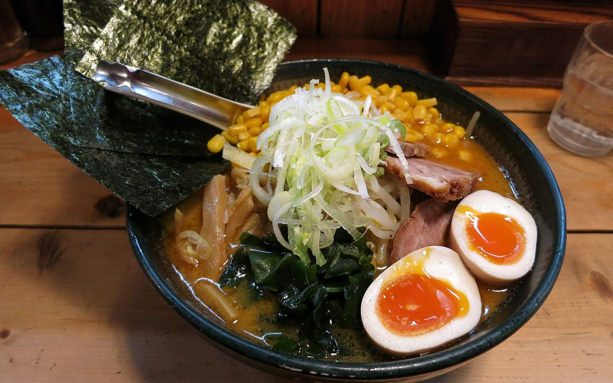

Ramen 101: Shoyu, Shio, Miso & Tonkotsu Explained
Four bowls, one cheat-sheet: what shoyu, shio, miso and tonkotsu actually mean, where each comes from, and which one to order first.

Photo: Douglas Paul Perkins / Wikimedia Commons (CC0). Stock photo, not from our trip.

Walk into a ramen shop in Japan and the menu (or the ticket machine) will usually sort bowls by flavour: shoyu, shio, miso, tonkotsu. Here's what each one means, where it comes from, and why the four aren't quite the same kind of category.
First, the five parts of a bowl
Ramen is usually described as five components: tare (the concentrated seasoning at the bottom of the bowl), aroma oil, broth, noodles and toppings. The noodles are chūkamen, wheat noodles made with kansui, an alkaline mineral water that gives them their yellow colour and springy bite. Broths are either chintan (clear, skimmed and gently simmered) or paitan (boiled hard until bones emulsify into a cloudy, creamy soup).
1. Shoyu: the Tokyo classic
Shoyu means soy sauce. The tare adds salt and umami, and the broth is usually clear. Tokyo-style ramen is the archetype: a soy-seasoned chicken broth, often with a touch of dashi, and slightly thin, curly noodles, topped with chāshū pork, menma (fermented bamboo shoots), spring onion and nori.
2. Shio: the lightest and oldest
Shio means salt, and it's generally considered the oldest of the four. The tare is built from salt plus umami ingredients like kombu and niboshi (dried sardines), so the soup stays pale and clear. Hakodate in Hokkaido is the city most associated with shio ramen.
3. Miso: Sapporo's winter bowl
Miso ramen was developed in Sapporo and reached national prominence around 1965. Miso is blended into the broth, giving a thick, nutty, slightly sweet soup that can take bold toppings. In Sapporo that often means sweetcorn, butter, bean sprouts, minced pork and garlic, with thick, curly, chewy noodles.
4. Tonkotsu: Kyushu's creamy pork-bone broth
Tonkotsu means pork bone (not to be confused with tonkatsu, the breaded cutlet). It's a paitan broth: bones boiled at high heat for hours until the soup turns milky. Hakata ramen from Fukuoka is the best-known version, served with thin, straight noodles and self-serve toppings like pickled ginger, sesame and spicy mustard greens. Many shops offer kaedama, a noodle refill dropped into your leftover soup.
Why the categories overlap
Strictly speaking, shoyu, shio and miso are seasonings (tares), while tonkotsu is a type of broth. That's why you'll see mash-ups everywhere, like Yokohama's iekei ramen, a soy-seasoned pork broth often called tonkotsu-shoyu.
Which style is your go-to? Tell us on Instagram.
Cheat-sheet
- Want light? Shio.
- Want classic? Shoyu.
- Cold day, big appetite? Miso.
- Rich and creamy? Tonkotsu.
Where to learn more
The Shin-Yokohama Ramen Museum, open since 1994, has exhibits on ramen history and a basement food court with branches of well-known shops from across Japan. Heading to Tokyo? Our Tokyo neighbourhood guide lists the areas known for ramen.
Sources (checked 16 Oct 2026): Wikipedia: Ramen; Wikipedia: Shin-Yokohama Ramen Museum. Hours change, so check before you go.